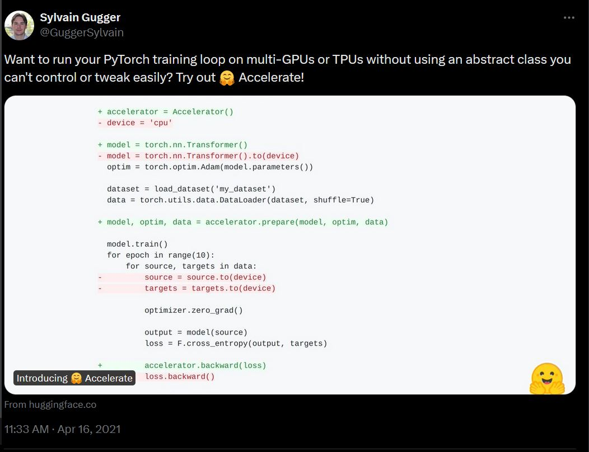
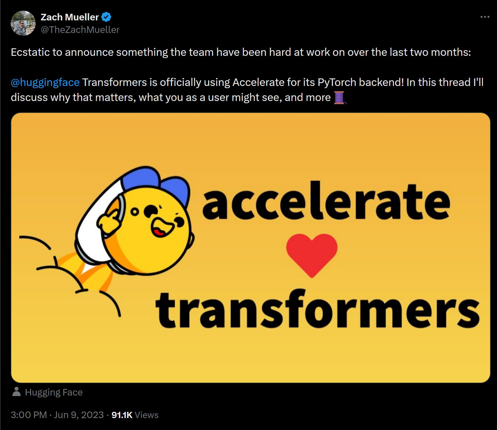

transformers TrainerTransformerEngine or MS-AMP)bitsandbytesaim, clearml, comet_ml, dvc-lite, ml-flow, tensorboard, wandb)FSDP, DeepSpeed, and Megatron-LM import torch
import torch.nn.functional as F
from datasets import load_dataset
+ from accelerate import Accelerator
+ accelerator = Accelerator()
- device = 'cpu'
+ device = accelerator.device
model = torch.nn.Transformer().to(device)
optimizer = torch.optim.Adam(model.parameters())
dataset = load_dataset('my_dataset')
data = torch.utils.data.DataLoader(dataset, shuffle=True)
+ model, optimizer, dataloader = accelerator.prepare(model, optimizer, dataloader)
model.train()
for epoch in range(10):
for source, targets in dataloader:
source, targets = source.to(device), targets.to(device)
optimizer.zero_grad()
output = model(source)
loss = F.cross_entropy(output, targets)
- loss.backward()
+ accelerator.backward(loss)
optimizer.step()Accelerator import torch
import torch.nn.functional as F
from datasets import load_dataset
+ from accelerate import Accelerator
+ accelerator = Accelerator()
device = 'cpu'
model = torch.nn.Transformer().to(device)
optimizer = torch.optim.Adam(model.parameters())
dataset = load_dataset('my_dataset')
data = torch.utils.data.DataLoader(dataset, shuffle=True)
model.train()
for epoch in range(10):
for source, targets in dataloader:
source, targets = source.to(device), targets.to(device)
optimizer.zero_grad()
output = model(source)
loss = F.cross_entropy(output, targets)
loss.backward()
optimizer.step()accelerator.prepare and remove device-placements import torch
import torch.nn.functional as F
from datasets import load_dataset
from accelerate import Accelerator
accelerator = Accelerator()
- device = 'cpu'
model = torch.nn.Transformer().to(device)
optimizer = torch.optim.Adam(model.parameters())
dataset = load_dataset('my_dataset')
data = torch.utils.data.DataLoader(dataset, shuffle=True)
+ model, optimizer, dataloader = accelerator.prepare(model, optimizer, dataloader)
model.train()
for epoch in range(10):
for source, targets in dataloader:
source, targets = source.to(device), targets.to(device)
optimizer.zero_grad()
output = model(source)
loss = F.cross_entropy(output, targets)
loss.backward()
optimizer.step()accelerator.backward for the backward pass import torch
import torch.nn.functional as F
from datasets import load_dataset
from accelerate import Accelerator
accelerator = Accelerator()
model = torch.nn.Transformer().to(device)
optimizer = torch.optim.Adam(model.parameters())
dataset = load_dataset('my_dataset')
data = torch.utils.data.DataLoader(dataset, shuffle=True)
model, optimizer, dataloader = accelerator.prepare(model, optimizer, dataloader)
model.train()
for epoch in range(10):
for source, targets in dataloader:
source, targets = source.to(device), targets.to(device)
optimizer.zero_grad()
output = model(source)
loss = F.cross_entropy(output, targets)
- loss.backward()
+ accelerator.backward(loss)
optimizer.step()device="meta"device_map="auto"accelerate config
accelerate launch
vs.
vs.
How can we make this better?
accelerate launchaccelerate configconfig.yaml filesaccelerate config or write your own:fsdp_config.yaml
compute_environment: LOCAL_MACHINE
distributed_type: FSDP
fsdp_config:
fsdp_auto_wrap_policy: TRANSFORMER_BASED_WRAP
fsdp_backward_prefetch: BACKWARD_PRE
fsdp_cpu_ram_efficient_loading: true
fsdp_forward_prefetch: false
fsdp_offload_params: false
fsdp_sharding_strategy: FULL_SHARD
fsdp_state_dict_type: SHARDED_STATE_DICT
fsdp_sync_module_states: true
fsdp_use_orig_params: false
main_training_function: main
mixed_precision: bf16
num_machines: 1
num_processes: 8All of which are supported by 🤗 Accelerate
Accelerator was great, needed better abstractions focused on controlling behaviorsPartialStatePiPPy gives us efficient pipeline-parallelism in distributed environments to increase throughput while keeping a simple torch-bound APIimport torch
from transformers import AutoModelForSequenceClassification
from accelerate import PartialState, prepare_pippy
model = AutoModelForSequenceClassification.from_pretrained("gpt2")
model.eval()
input = torch.randint(
low=0,
high=model.config.vocab_size,
size=(2, 1024), # bs x seq_len
device="cpu",
)
model = prepare_pippy(model, split_points="auto", example_args=(input,))
with torch.no_grad():
output = model(input)axolotlfastaiFastChatlucidrainskorniaDistributedDataParallelism

Trainer or Accelerator, but how to use what where